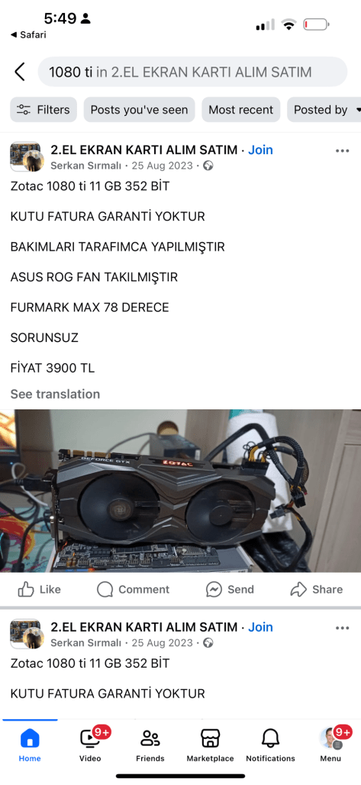
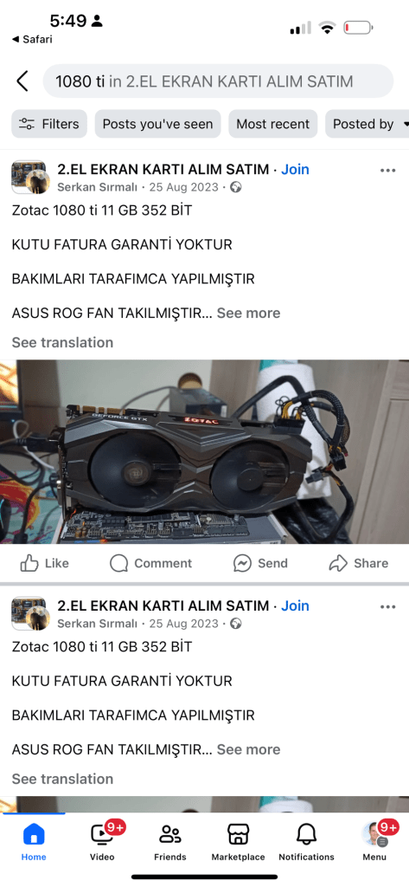

RTX 1080 vs iPhone 14 Pro Max GPU: A Battle of Power and Efficiency ⚔️💻📱
When it comes to GPUs, two powerhouses stand out for very different reasons: the NVIDIA RTX 1080 💪 and the iPhone 14 Pro Max’s GPU 🎮📲. One is built for hardcore desktop gaming, while the other shines in the palm of your hand. Let’s break it down! 🔍👇
- Raw Power 🏋️♂️ vs. Mobile Efficiency 🏃♀️
• The RTX 1080 is a beast with 8.9 TFLOPs of power 💥, perfect for 4K gaming 🎮 and high-performance rendering 🎨.
• The iPhone 14 Pro Max’s GPU delivers around 2.5-3 TFLOPs ⚡ (estimated), focusing on smooth mobile gaming, AR experiences 🪄, and incredible efficiency 🔋.
👉 Verdict: RTX 1080 wins for raw power 💥, but the iPhone GPU excels in battery-friendly performance 🔋.
- Memory 🧠
• RTX 1080: Equipped with 8GB GDDR5X memory 🖥️, offering high bandwidth and speed 🚀.
• iPhone 14 Pro Max: Uses 6GB of unified memory 🤝, shared between the GPU and CPU for seamless multitasking.
👉 Verdict: RTX 1080’s dedicated memory wins for heavy-duty workloads 🛠️, but iPhone’s unified approach shines in optimized mobile tasks 🌟.
- Use Cases 🎯
• RTX 1080: Designed for hardcore gamers 🎮, 3D artists 🖌️, and VR enthusiasts 🕶️.
• iPhone 14 Pro Max GPU: Built for on-the-go gaming 🕹️, augmented reality 📷🪄, and buttery-smooth app performance 📱.
👉 Verdict: Desktop power 🖥️ vs. pocket-sized magic ✨—it depends on what you need!
- Power Consumption ⚡
• RTX 1080: Draws up to 180W 🔥—you’ll feel the heat and need a solid power supply 💡.
• iPhone 14 Pro Max GPU: Sips just ~5W 🍃, keeping your phone cool and battery life strong 🔋.
👉 Verdict: iPhone’s GPU is a master of efficiency 🌿, while the RTX 1080 craves energy ⚡.
The Bottom Line 🏁
• If you’re a desktop gamer or need serious rendering power, the RTX 1080 is your champion 🏆.
• For those who want a powerful GPU in their pocket, optimized for apps and games, the iPhone 14 Pro Max is a marvel of modern engineering 🌟📱.
Which one fits your needs? Let us know in the comments! 💬👇
TechBattle ⚔️ #RTX1080 #iPhone14ProMax


Obs and deepl
Here’s a guide on OBS (Open Broadcaster Software) performance on an NVIDIA GTX 1080 Ti, including how to integrate DeepL transcription for your content.
OBS Performance on GTX 1080 Ti 🎥💻
The GTX 1080 Ti is a powerhouse for streaming and recording, even by today’s standards. Here’s what you can expect:
- Encoding Power 🚀
The GTX 1080 Ti uses NVIDIA NVENC (Pascal generation), which offloads encoding from your CPU to the GPU.
• Best Settings for OBS:
• Encoder: NVIDIA NVENC (new).
• Rate Control: CBR (Constant Bitrate).
• Bitrate: 6000-8000 Kbps (for 1080p60 streams).
• Preset: Quality or Max Quality (if your system can handle it).
• Profile: High.
• Keyframe Interval: 2.
• Performance: Smooth encoding for 1080p 60fps or even 1440p 60fps recordings and streams.
- GPU Load Considerations 📊
While NVENC handles encoding, gaming or other GPU-intensive tasks running simultaneously may push the GTX 1080 Ti to its limits.
• For optimal performance:
• Monitor GPU usage using tools like MSI Afterburner.
• Avoid high in-game graphics settings during streams.
- OBS Recording Settings 🎞️
• Resolution: Record at native 1080p or upscale from 720p if performance is an issue.
• File Format: Use MKV (recommended for recovery support) or MP4.
• Codec: H.264 or H.265 (if supported).
- Streaming Performance 🌐
• Ideal for streaming on platforms like Twitch or YouTube at 1080p 60fps with minimal latency.
• With a strong internet connection, the GTX 1080 Ti ensures a high-quality stream without dropped frames.
Adding Transcription Using DeepL 📝
Step 1: Install OBS Plugins
-
Download the OBS WebSocket Plugin (needed for external control).
-
Install Advanced Scene Switcher (optional but helpful for automation).
Step 2: Set Up a Speech-to-Text Tool
Use software like Whisper (open source) or Google Speech-to-Text for live transcriptions. These tools can transcribe audio from your stream or recording in real-time.
Step 3: Integrate DeepL for Translation
- Export Transcriptions:
• Save the transcriptions as .txt files or feed them directly into DeepL’s API.
- DeepL API:
• Sign up for the DeepL API to automate translations.
• Use Python or Node.js scripts to process transcriptions in real-time and display subtitles.
Step 4: Display Translations in OBS
-
Add a Text (GDI+) Source in OBS.
-
Configure it to read live-updated transcriptions from your text file.
-
Customize font, size, and position for clear visibility.
Conclusion
With the GTX 1080 Ti, you can achieve excellent OBS performance, streaming or recording at 1080p60 with ease. Adding DeepL transcription for multilingual accessibility elevates your content, making it engaging for global audiences 🌍🎙️.
Would you like help setting up a specific script for DeepL integration?
Running a large language model (LLM) on a GTX 1080 Ti is possible but comes with some limitations due to the GPU’s memory capacity and architecture. Here’s a detailed overview of what you can achieve with the 1080 Ti when working with LLMs.
GTX 1080 Ti Specs Relevant for LLMs
• VRAM: 11 GB GDDR5X
• CUDA Cores: 3584
• Architecture: Pascal
• FP32 Performance: 11.34 TFLOPs
The 11 GB of VRAM is the key limiting factor for running large-scale models. Many newer LLMs require significantly more VRAM, but optimizations and quantization can help fit models within the 1080 Ti’s capabilities.
Running LLMs on the GTX 1080 Ti
- Suitable LLM Models for 1080 Ti
• Small Models:
• GPT-style models like GPT-2 or distilGPT-2.
• Open-source models like LLaMA 2 (7B) or Alpaca with quantization.
• Smaller chat-oriented models like Vicuna-7B or Mistral-7B.
- Optimizations for LLMs
To work within the 11 GB VRAM:
- Quantization:
• Use 8-bit or 4-bit quantization (libraries like bitsandbytes or Hugging Face’s transformers).
• Tools: transformers, AutoGPTQ, LLM.int8() for reduced precision without major performance loss.
- Offloading:
• Offload parts of the model to the CPU using libraries like Hugging Face accelerate or FlexGen.
• This trades speed for the ability to run larger models.
- Low-RAM Mode:
• Enable memory-efficient attention mechanisms using FlashAttention or PyTorch optimizations.
- Frameworks to Use
• Hugging Face Transformers: Popular for fine-tuning and inference of models like GPT-2 or LLaMA.
• Text Generation Inference: Optimized serving for LLaMA models.
• GPTQ-for-LLaMA: Helps with quantized inference for smaller VRAM.
• PyTorch: General-purpose framework for running custom LLMs.
Performance Expectations
Fine-tuning
Fine-tuning an LLM on a GTX 1080 Ti is possible for small models, but you’ll need optimizations:
• Use datasets with gradient checkpointing to reduce memory usage.
• Stick to models with fewer parameters, e.g., 2B-7B range.
• For fine-tuning: Use frameworks like LoRA (Low-Rank Adaptation) to reduce resource requirements.
Inference
• GPT-2: Runs smoothly at 1080p resolutions.
• LLaMA 2 (7B): Achievable with 4-bit quantization; response times might be slower but functional.
• Vicuna-7B or Alpaca-7B: Similar performance to LLaMA 2 (7B) with optimizations.
Conclusion
While the GTX 1080 Ti isn’t ideal for cutting-edge LLMs like GPT-4 or LLaMA 65B, it can handle smaller models with optimization. By leveraging tools like quantization, offloading, and memory-efficient libraries, you can explore LLMs for personal or small-scale tasks.
Would you like guidance on setting up a specific model?
Imported from rifaterdemsahin.com · 2025